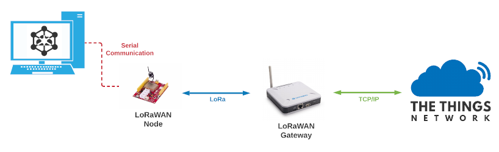

pyIoTDevSim
pyIoTDevSim is a IoT device simulator developed by AgroTechLab (Technology Development Laboratory for Agribusiness) of IFSC (Federal Institute of Santa Catarina).
It uses a real LoRaWAN module (connected to serial port) to sent simulated IoT data to TTN (The Things Network) infrastructure. Its objective is to accelerate the development of IoT solutions, allowing the validation of the communication infrastructure, data validation/formatting and storage and visualization system in parallel to the development of hardware and firmware projects.
Important
pyIoTDevSim uses UART and the AT protocol to communicate with LoRaWAN modules. Therefore, it is only compatible with LoRaWAN modems, i.e. it does not implement the LoRaWAN (L2) protocol.
Currently pyIoTDevSim is compatible with following LoRaWAN modules:
RisingHF RHF76-052x;
RisingHF RHF0M003;
pyIoTDevSim can be configured using a YAML file (pyIoTDevSim.yml), where the system and projects parameters are defined. More
information about the configuration file can be found Configuration file section.
When pyIoTDevSim is executed, it reads the configuration file and starts the communication with the LoRaWAN module. All operations
are logged in the console and in a log file (pyIoTDevSim.log).
Versions support
Updates and new features are constantly being added to pyIoTDevSim. The following table shows the supported versions:
Version |
Security |
New features |
|---|---|---|
0.x.x |
Yes |
Yes |